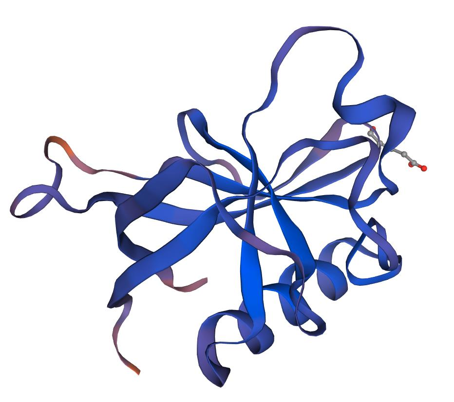
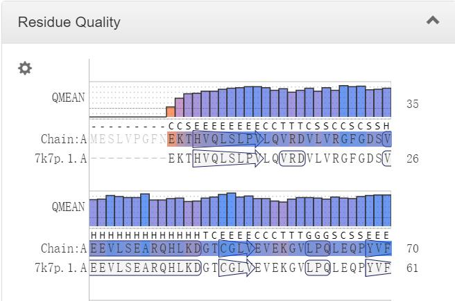

- Team
- Project
- Lab
- Model
- Parts
- Improvement
- Contributions
- Judging

We feel more than grateful to Ali Hou, Xianghui Yu, Yang Zhan, and Yan Chen for their constructive suggestions for our project and the guidance throughout the whole process of the experiment.
The lipid accumulation was also measured at 72 hours following dilution. In this time point, the culture had reached the stationary phase, and LDs were clearly detectable with Nile red staining for all tested strains, including the wild-type (Fig 2B). Lipid accumulation is known to increase in S. cerevisiae cells upon nutrient depletion (Werner-Washburne et al., 1993), and our results reveal that the difference between wild-type and TAG lipase deletion strains is considerably reduced in the stationary phase cells (Fig 2B). In the 72-hour time point, we did not observe a statistically significant difference between wild-type and the single tgl4Δ or double tgl3Δ tgl4Δ deletion cells. Single deletion of TGL3, which had the largest effect in the 24-hour time point, also led to increased LD staining intensity at 72 hours. We observed the highest intracellular lipid levels with the triple tgl3Δ tgl4Δ tgl5Δ deletion strain, and interestingly, in this time point, the zwf1Δ strain had considerably lower LD staining, comparable to the level of the wild-type strain (Fig 2B). Although the lipid levels of zwf1Δ strain were not lower in the 24-hour time point, ZWF1 deletion could be expected to result in decreased lipid synthesis, as Zwf1 is required to regenerate NADPH, a critical cofactor in fatty acid synthesis. Taken together, by preventing TAG degradation with triple deletion of TAG lipases, we have achieved a considerable increase in lipid production compared to the wild-type strain.
Figure 1. Nile red staining shows build-up of lipids in LDs upon TAG lipase deletions. Microscopy images showing the cells in brightfield image and the fluorescent signal of lipids stained with Nile red. The cells are from 24 hour time point after inoculation.
We want to thank our advisor Yu Ma, Shuyuan Zhang and Zhanyan Zhang for their contributions in the design of our project and the guidance provided in the experiment. They also participated in HP and education.
All the members of our team are involved in the project. The details of attribution are as follows:
All the members of our team are involved in the project. The details of attribution are as follows:
Special thanks to all the people who have kindly offered us assistance and support to help us carry out our project successfully. We sincerely appreciate National Engineering Laboratory for AIDS Vaccine, School of Life Sciences of Jilin University for their great support in the iGEM competition. Thanks to the translational medicine lab of National Engineering Laboratory for AIDS Vaccine for providing the fluorescent plate reader and the corresponding instructions.
Ph.D candidate Xuan Wang provided guidance for the operation of HPLC. Dr. Tiejun Gu and Dr. Xiangyu Meng provided guidance on the use of basic instruments and safety standards for instrument operation.
Gene sequencing and primer synthesis were done by Comate Bioscience Co. Ltd (Changchun, China). Gene synthesis was done by Genscript Biotechnology Co. Ltd (Nanjing, China).